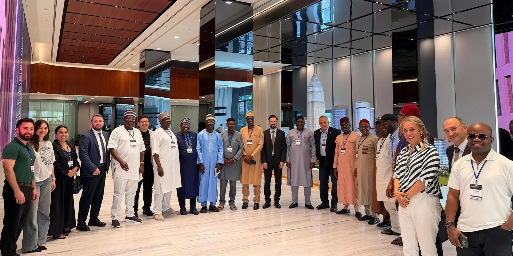

01 · WEBİNARLAR · 23.09.2026
Webinar Serisi, 1. bölüm
Konuk: Ziraat Teknoloji Genel Müdürü Bayram Tuzcu. Sorular canlı yayında alındı.
1bölüm yayınlandı · 2. bölüm yakında
Webinarlar, çalıştaylar, fuarlar ve heyet ziyaretleri. Yeni tarihler burada ve sosyal medya hesaplarımızda duyurulur.
Webinarlar, çalıştaylar, fuarlar ve heyet ziyaretleri. Her durakta o türün son etkinliği.
Konuk: Ziraat Teknoloji Genel Müdürü Bayram Tuzcu. Sorular canlı yayında alındı.

Kurumlar ve girişimler İFM'de; mentörlük dönemi çıktıları ve sipariş odaklı iş birliği modeli.

Cumhurbaşkanlığı Yatırım ve Finans Ofisi standında, Invest in Türkiye alanında Fintech Zone girişimleri.

Heyet kampüsü gezdi; iki ülke fintek ekosistemleri arasında iş birliği alanları konuşuldu.
Sosyal medya hesaplarımızda da. Bültende ayda bir e-posta: webinar tarihleri, çağrılar ve Fintech Gate dönemleri.
Yaklaşan etkinlik en üstte; gerçekleşenler yeniden eskiye sıralı.
Ön başvuru birkaç dakika sürer; değerlendirme ve sözleşmeyle İFM'deki kampüse yerleşirsiniz.